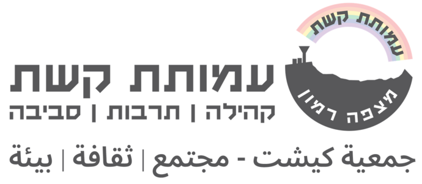
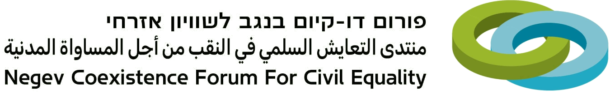


אלפוח'ארי: הכפר שקיבל שטח ושיגשג
בזכות צירוף נסיבות נדיר, תושבי הכפר הציורי אלפוח'ארי שמדרום ללהבים נהנו ב-40 השנים האחרונות מאפשרות לבנות בתים ומכלאות ללא איום בהריסות, ומ-2,000 דונם לחקלאות.
התוצאה: אין עוני ואבטלה, אין פשיעה ואלימות, אין נשירה מבתי הספר. ענף הצאן, שכמעט הוכחד בשאר הכפרים, משגשג עם כ-5,000 כבשים, ומהכפר יצאו קבלנים מצליחים, מנהלי מפעלים ומוסדות חינוך והרופא הראשי של קופת חולים כללית במחוז דרום.
זהו המודל ל"תוכנית המועצות האזוריות": האדמה היא מנוע צמיחה, לא שדה קרב.


הרחבת המועצות האזוריות הבדואיות לכ־600 אלף דונם

הרחבת אל־קסום ונווה מדבר והקמת מועצה אזורית בבקעת באר שבע, יכניסו 39 מ־46 הכפרים למסגרת מוניציפלית מתפקדת.
רוב השטח יגיע משטחים גליליים, שאינם שייכים לרשות מקומית. השטח לנפש יגדל מחצי דונם לכ־4 דונם, לעומת 28 במועצות היהודיות בצפון הנגב.
חקלאות, אנרגיה מתחדשת, דרכי מסחר, אזורי תעסוקה ומקורות נוספים ייצרו הכנסות מארנונה, ויאפשרו למועצות לפתח תשתיות ולספק שירותים.
הקצאת 150 אלף דונם ל-30 אלף נחלות בכפרים

לכל משפחה יוקצו 2 דונם למגורים ו־3 דונם לפרנסה, לא בהכרח בצמוד.
בנייה מדורגת לגובה תאפשר מגורים להורים, לילדיהם ולחלק מהנכדים. משק העזר יאפשר להקים עסקים מכל הסוגים, להשכיר שטח או לגדל מזון לצריכה עצמית.
הנגשת האדמה כאמצעי ייצור תאפשר לאלפי משפחות להגדיל הכנסות, להקים עסקים ולשלם מסים.
ברז אחד, רחוק מהבתים
בנחל חווה, כפר של כ־200 תושבים בין עבדת למצפה רמון, יש ברז מים ראשי אחד, רחוק מהבתים. צנרת המים חשופה, החשמל מגיע מלוחות סולאריים, אין ביוב ואין תאורת רחוב. דרך העפר לכפר הורסת רכבים.
כך נראים עשרות כפרים בנגב. המדינה אינה מכירה בהם, ולכן אינה מתכננת אותם ואינה מחברת אותם לתשתיות. בלי תוכנית אין היתרי בנייה, וכל הבתים מאוימים בהריסה. גם רוב הכפרים שכבר הוכרו לא באמת הוסדרו: יש להם שם רשמי, אבל בשטח חסרות אותן תשתיות בסיסיות.
"תוכנית המועצות האזוריות" מציעה לשנות את המצב מהיסוד: להכיר בכפרים ולהביא לכך שיוקמו בהם אלפי עסקים בתוך שנים ספורות, לטובת תושבי הנגב והמדינה כולה.
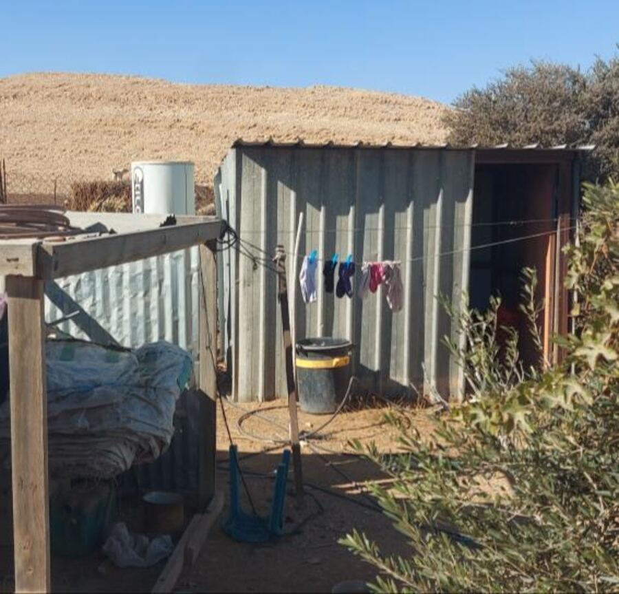
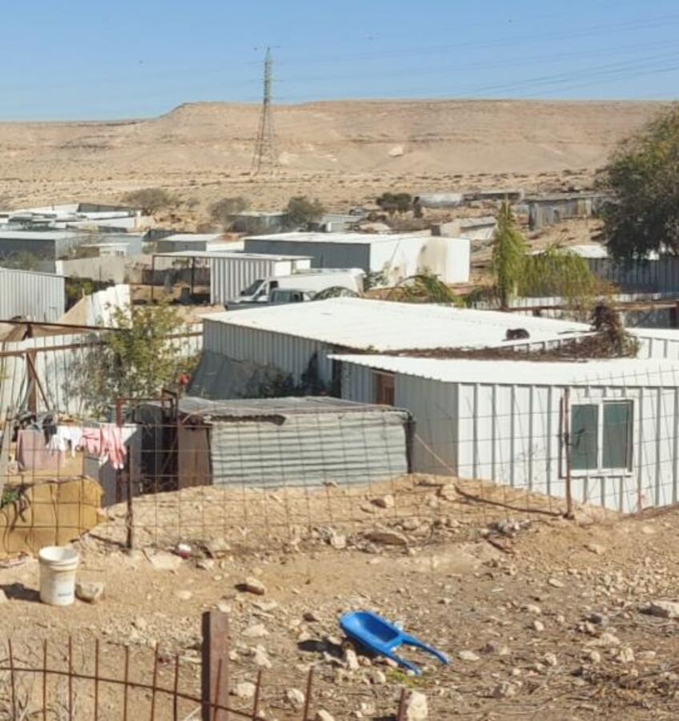
קצב הריסות הבתים גבוה פי 20 מקצב ההסדרה
* נתוני רשות הבדואים, 2017–2022. אין נתונים רשמיים עדכניים
מושב, לא שיכון
רוב תושבי הכפרים לא רוצים לעבור לדירה בעיירה. הם רוצים מה שקיבלו המושבים: נחלה שבה המשפחה המורחבת גרה יחד, ושטח לעדרים, לחקלאות ולעסק. התוכנית בנויה משלושה נדבכים.
עוצרים את ההריסות
מהיום הראשון של הממשלה. במקביל נקבעים כללים ברורים לתקופת הביניים: איפה מותר לבנות, ואיך מחברים מים, חשמל וגני ילדים בלי לחכות לסוף התכנון.
מועצות עם שטח
המועצות האזוריות הבדואיות גדלות מ־71 אלף דונם לכ־600 אלף, ומקיפות 39 מתוך 46 הכפרים. בשטחים הפתוחים: חקלאות, אנרגיה סולארית ואזורי תעסוקה שמכניסים ארנונה.
משק לכל משפחה
30 אלף משקי עזר של 5 דונם, במקום שבו המשפחות כבר גרות. בלי לחכות להכרעה בתביעות הבעלות, ובלי לוותר עליהן.
גם אחרי התוכנית הפער יישאר פי שבעה. זו לא השתלטות על הנגב. זה צמצום של פער.
לו היו הכפריים הבדואים יהודים, המדינה הייתה הופכת אותם מזמן למושבניקים.
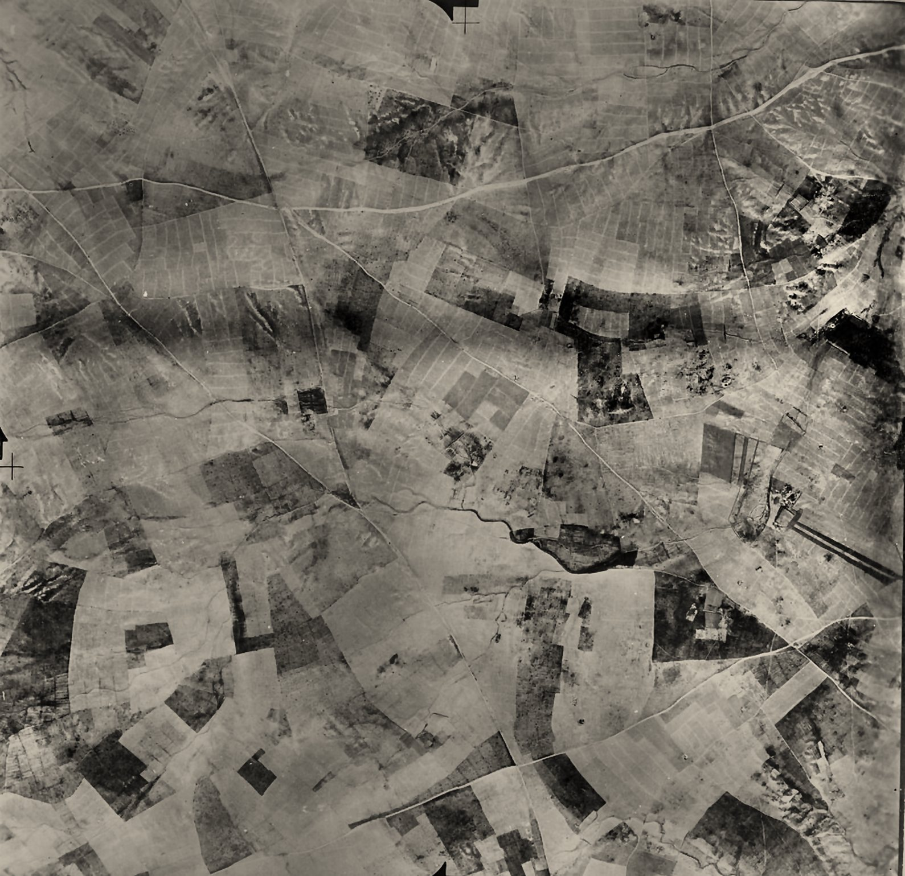
לא נוודים. חקלאים
זו בקעת באר שבע ב־1945, האזור שבין כבישים 25 ו־31 של היום. השדות מחולקים לחלקות, עם גבולות ודרכי עפר, וכמעט אין בצילום שטח שלא עובד. היום, באותו שטח, השדות עדיין מעובדים, והבתים יושבים ביניהם.
במפקד הבריטי של 1931 סווגו רק כ־12% מהבדואים בנגב כמי שמתפרנסים מרעייה בלבד. כל השאר עיבדו אדמה. באמצע שנות ה־30 עובדו במחוז באר שבע יותר מ־2 מיליון דונם.
את המושב הבדואי לא צריך להמציא. הוא כבר היה כאן.
האדמה כבר מסומנת
טיוטת התוכנית האזורית לנגב המזרחי, שהכין מינהל התכנון, מייעדת כ־278 אלף דונם לחקלאות. לפי אותה תוכנית, 90% מהחקלאות באזור היום היא בדואית. כמחצית מהשטח נמצאת סביב היישובים והכפרים הבדואיים.
השטח קיים. חסרה ההחלטה להכיר בכפרים שמעבדים אותו.
נחל חווה: התושבים כבר שרטטו את הכפר
נחל חווה (אל־אפדאי) יושב לצד כביש 40, בין מצפה רמון לשדה בוקר. גרים בו 196 תושבים, 12 משפחות מורחבות משבט סראחין.
בין דצמבר 2024 לאפריל 2025 ישבו אדריכלים מעמותת קשת עם נציג מכל משפחה, בשיג, מעל תצלום אוויר של הכפר. כל משפחה סימנה את הנחלה שלה ואמרה מה חסר לה: גן ילדים, ביוב, דרך סלולה, צימרים לתיירים.
כל המשתתפים אמרו שהם רוצים לשמור על הכפר כמו שהוא: מסורתי, שקט וקרוב למדבר. אחת מארבע החלופות שהכינו המתכננים מראה איך עושים את זה.
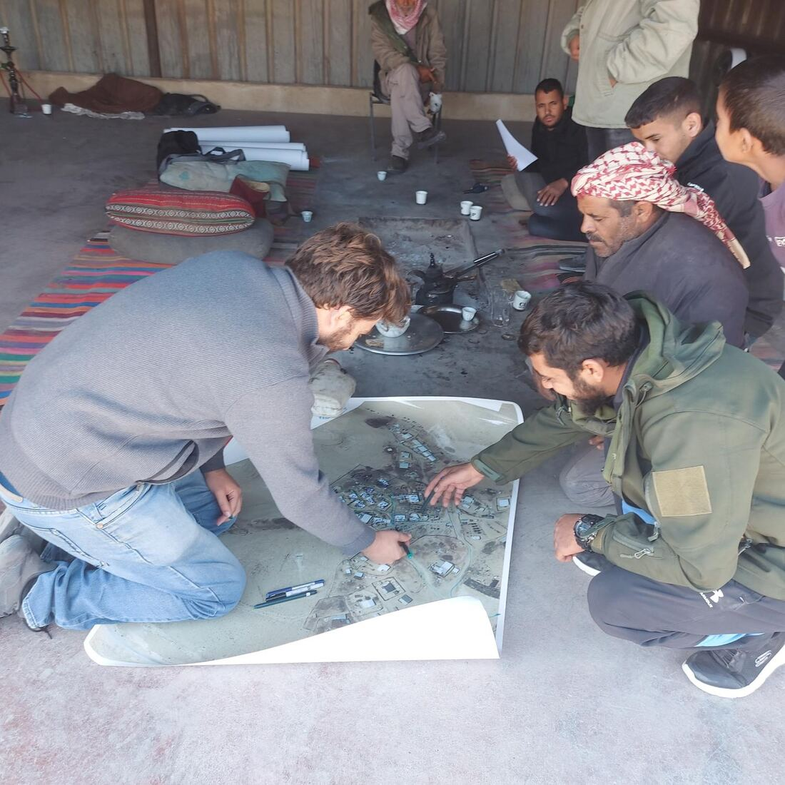
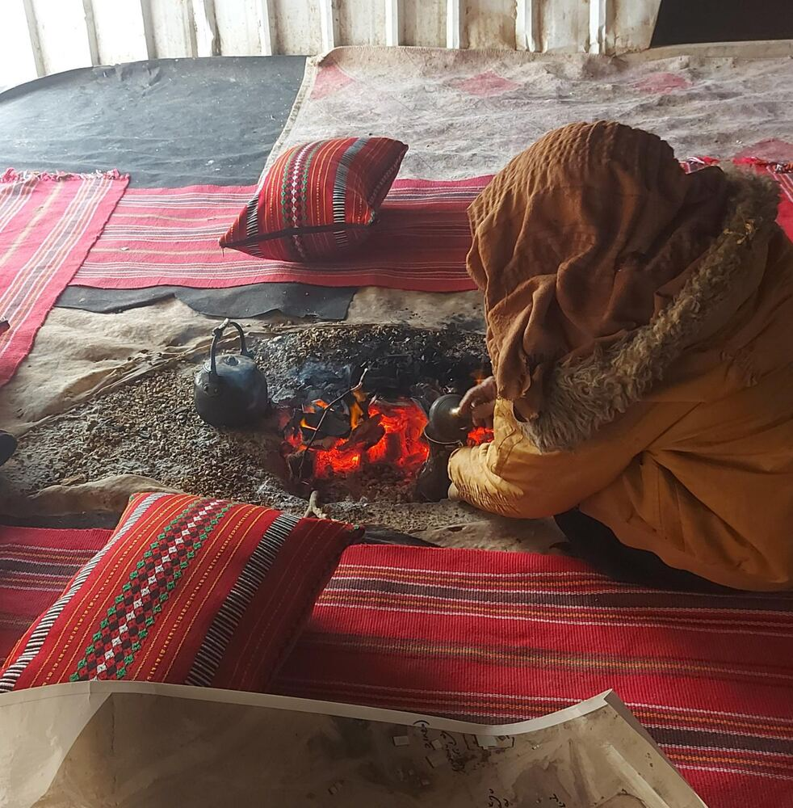
התוכנית קיימת. התושבים שותפים לה. אין מניעה תכנונית. חסרה רק החלטת ממשלה, ו"תוכנית המועצות" מבקשת לקבל אותה תוך 60 יום.
הכפר לפי חלופה 3 של המתכננים

"מבדיקה של תכניות המתאר הארציות והמחוזיות עולה, שאין מגבלה סטטוטורית־תכנונית בשטח הכפר".
איך זה ייראה
כל המשתתפים בסקר ביקשו לבנות בחומרים ובגוונים של המדבר. ב־2022 יצאו נציגים מקהילות הר הנגב לסיור בכפרים הבדואיים בסיני, וחזרו עם השראה: בתי אבן, לבני אדמה וטיח בוץ. במקום פח, בתים שנראים כאילו צמחו מהנוף.


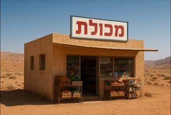
הכפר כבר מתפרנס מהאדמה
צאן, גמלים, זיתים ואירוח באוהל. התוכנית לא ממציאה כלכלה חדשה. היא נותנת לכלכלה הקיימת כתובת חוקית, ומקום לגדול. גם מינהל התכנון מציע מתחמי אירוח בשיגים ובאוהלים, ומקדם את "דרך האוהלים" באזור עבדה ודרומה, לאורך אותו כביש.
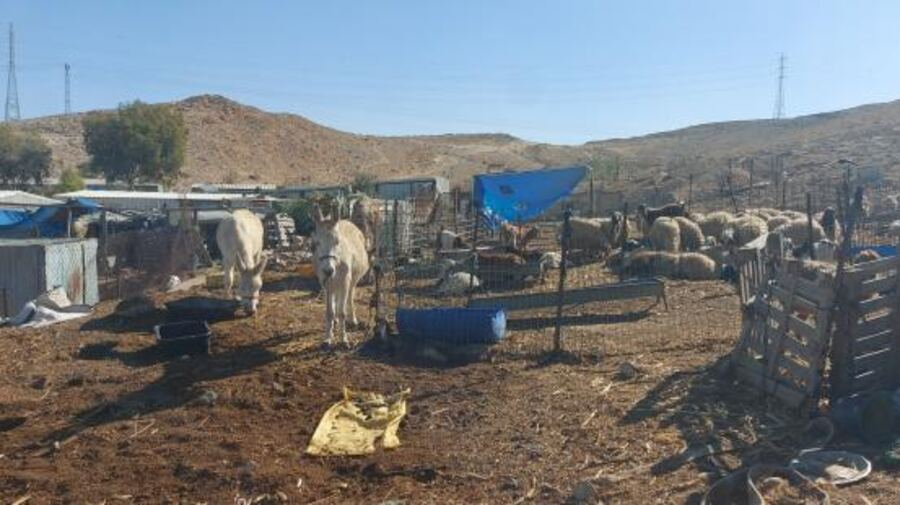
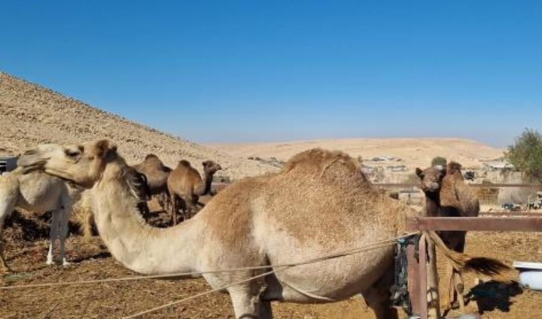
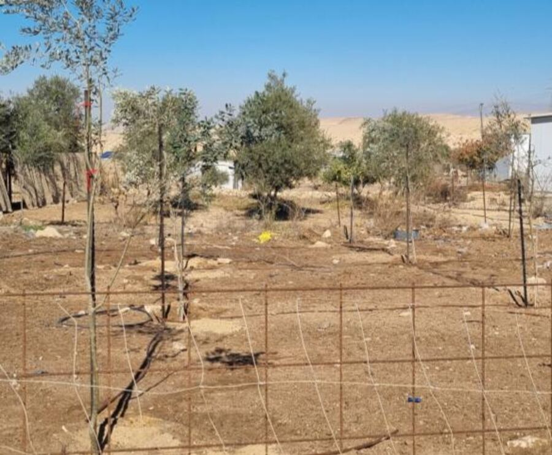

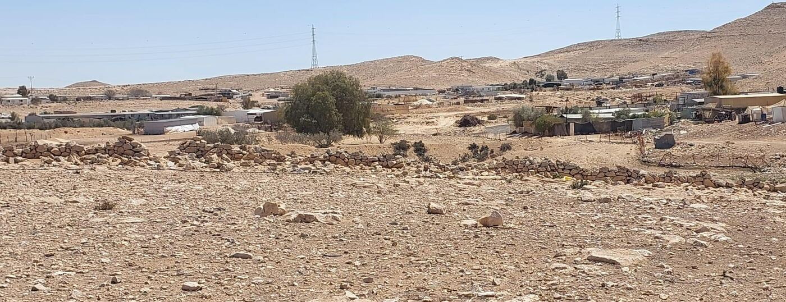
כלכלה, לא צדקה
שיעור התעסוקה של נשים בדואיות. אצל נשים יהודיות: כמעט 80%. משק ליד הבית הוא מקום עבודה ליד הבית.
בדואים מהנגב שנרצחו ב־2025 ושגרו בכפר לא מוכר. 32 מהם גרו ברהט ובעיירות. העיור לא הביא ביטחון.
תוספת תוצר בשנה בנגב ביישום מלא. זו הערכה, ולכן התוכנית דורשת שהמדינה תמדוד אותה בעצמה.
המועצה לא מבקשת מהממשלה להאמין למספרים שלה. היא מבקשת מחקר כלכלי בלתי תלוי ביום הראשון, שיקבע יעדים מדידים ליישום.
שלוש שאלות שכולם שואלים
ומה עם תביעות הבעלות?
התוכנית לא מכריעה בהן. כל התושבים זכאים למשק, עם תביעה ובלי תביעה, ואף צד לא מוותר על עמדתו המשפטית.
לוקחים אדמה מיישובים יהודיים?
לא. רוב השטח הוא שטח שלא שייך לאף רשות. רק בשוליים יעברו שטחים קטנים מערד, מירוחם ומתמר, במקומות שבהם הכפרים כבר יושבים.
זה לא יהפוך להפקרות?
להפך. כשלכל משפחה יש מקום חוקי לבנות, ברור מה מותר ומה אסור, והאכיפה נעשית קלה וזולה.
לוח הזמנים לממשלה הבאה
- היום הראשון
עוצרים את ההריסות.
- עד 14 יום
מאמצים את עקרונות התוכנית, מורים לשר הפנים להכין את הרחבת המועצות ויוצאים למחקר הכלכלי.
- 30 יום
צוות יישום בין־משרדי מתחיל לכתוב את הכללים לתקופת הביניים.
- 60 יום
תוכניות החלוץ יוצאות לדרך, ובהן נחל חווה.
- 120 יום
החלטה על גבולות המועצות ועל הקצאת הקרקע למשקים.
- 30 חודשים
תוכניות לכל הכפרים מוגשות להפקדה.
שישה עשורים ניסתה המדינה להזיז את הכפרים, ולא הצליחה.
מה שהמדינה נתנה למושבים, היא יכולה לתת לאזרחיה הבדואים. זה לא רק צודק. זה גם משתלם.